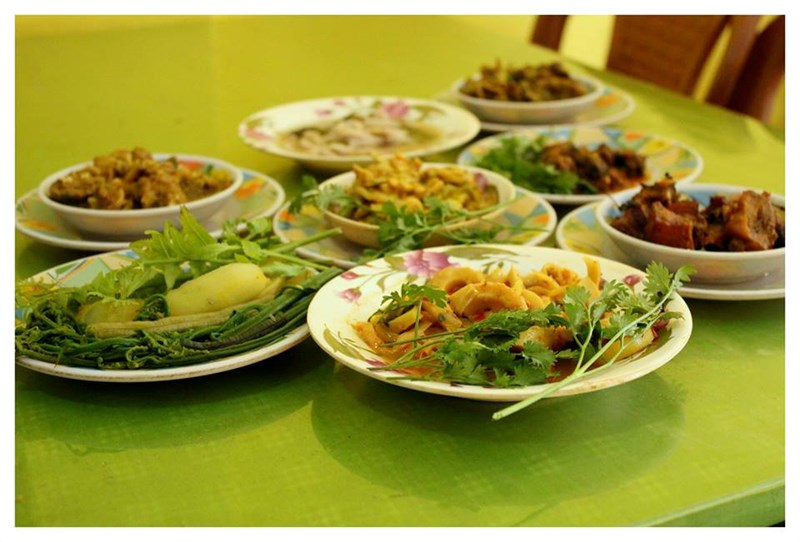
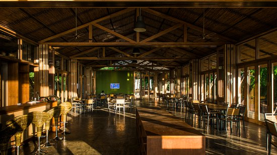

Tohzah Restaurant
Location and Contact Information
Address: 2No Station Road | Joypurhat, Bandarban 5900, Bangladesh
Location: Asia > Bangladesh > Chittagong Division > Bandarban
Phone Number: +880 1719-000656
Restaurant features
Reservations, Seating, Waitstaff
Green Prairie Restaurant
Location and Contact Information
Location and Contact Information
Address: Hotel Grenland, Next to Head Post Office, | Chimbuk Road,, Bandarban, Bangladesh
Location: Asia > Bangladesh > Chittagong Division > Bandarban
Phone Number: +880 361-63613
Restaurant features
Reservations, Outdoor Seating, Seating, Waitstaff.

Rupashi Bangla Restaurant
Location and Contact Information
Address: Chittagong Bandarban, Bandarban, Bangladesh
Location: Asia > Bangladesh > Chittagong Division > Bandarban
Phone Number: +880 1884-256310
Restaurant features
Seating, Waitstaff, Takeout